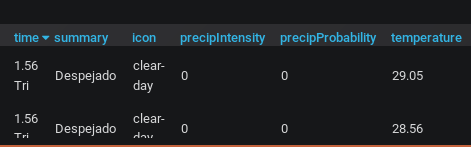

Monitorización con Grafana
Daniel Juárez Martínez
Monitorización con Grafana
by Daniel Juárez Martínez

Introducción
- ¿Cuál es el objetivo?
- ¿Qúe es Grafana?
- ¿Qué es Prometheus?
- Node-exporter
- Cadvisor
- Alertas
- Plugins
- Grafana + Panoply + Analytics + Blog
¿Cuál es el objetivo?
Hacer funcionar todos los servicios de los que se dispone.
El objetivo es implantarlo en una empresa para mejorar la calidad de trabajo productivo.
- Aprovechar al máximo los recursos
- Prevenir incidencias
- Ahorro de tiempo
Grafana ¿Qué es?
Es un conjunto de herramientas de código abierto para el análisis y visualización de métricas.
imagen de grafana con las plataformas.

Prometheus
Es un sistema de monitoreo de sistemas y servicios. Recopilando métricas en tiempo real.
Node-Exporter
Exportador que analiza el hardware y del Sistema del equipo.
- CPU
- Memoria Usada

Cadvisor
Es un agente que monitorea,recogiendo métricas de uso de recursos de los contenedores.
- uso de CPU por núcleo
- Procesos en uso

Alertas
Grafana contiene un sistema de alertas que permite avisarnos en caso de incidencia.
Plugins
Es un componente que tiene la capacidad de ampliar las funciones de nuestra estructura.
Darksky
WorldPing
Darksky
Es un plugin de metereología, recolecta información en tiempo real.
Tiempo Actual
Temperatura

WorldPing
Es un complemento que nos sirve para monitorizar el estado de nuestra web.

Grafana + Panoply + Analytics + Blog
Estas son las plataformas con las que he realizado el monitoreo.
Permitiendo obtener un análisis las 24 horas del día.
- Tiempo de Visita
- Navegador usado